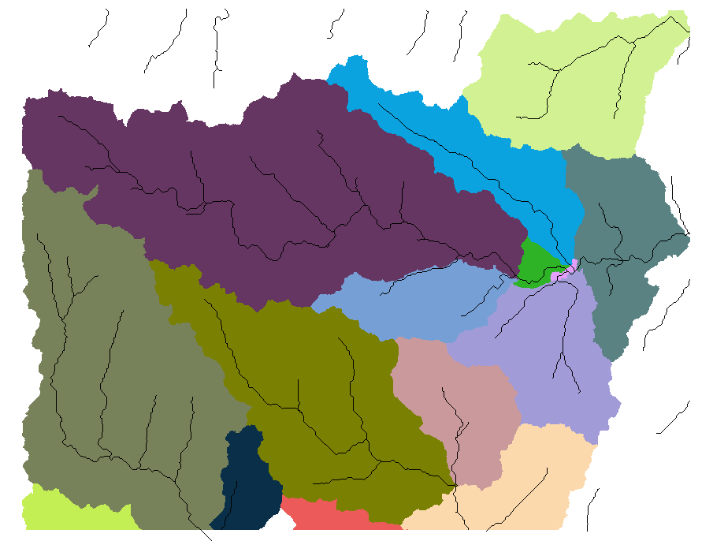
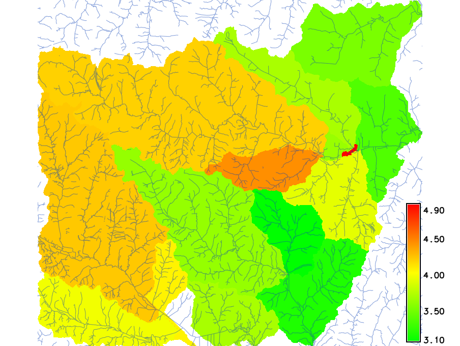
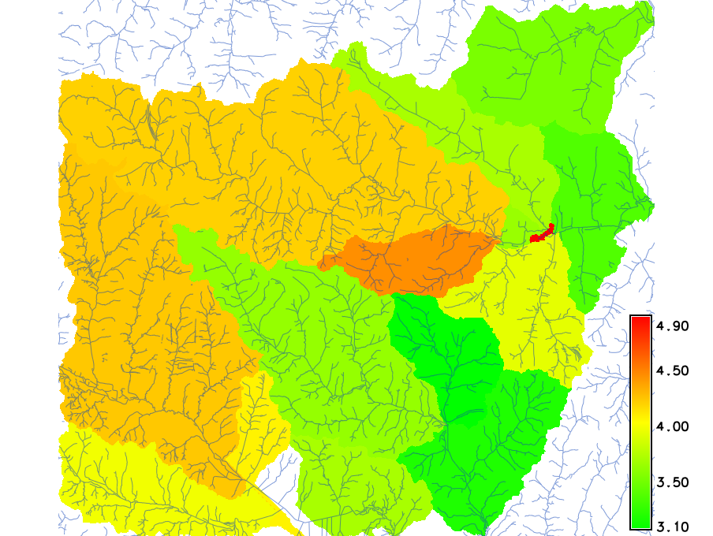
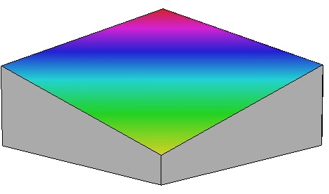

Geospatial Analysis
Basic raster operations
Helena Mitasova
GIS/MEA582 Geospatial Modeling and Analysis NCSU
Learning objectives
- Explain global and zonal statistics
- Define neighborhood operations
- Understand raster map algebra
- expressions, operators, functions and variables
- basic calculations, integer and floating point data
- "if" conditions, handling NULLs and creating masks
- Define raster mosaicking and patching
- Explain raster map reclassification and rescaling
Summary statistics: continuous data
- stored numbers are values quantifying the phenomenon
- univariate statistics: min, max, mean, standard deviation, median, ...
- histogram (requires discretization into bins)
Can be applied as global, zonal, or neighborhood operations
See relevant equations and additional metrics in Supplemental material
Summary statistics: discrete data
- stored numbers can be values (quantitative data) or category numbers (qualitative data)
- values apply to an area rather than grid point
- univariate statistics can be applied only to quantitative attributes
- majority (mode or most frequent category), diversity (number of different categories) apply to category data
Can be applied as global, zonal, or neighborhood operations
See relevant equations and additional metrics in Supplemental material
Global statistics
Continuous data example
- Compare elevation data from different sources using mean, standard deviation and histogram
- Identify data anomalies and potential artifacts
Global statistics: compare DEMs


Global statistics: compare DEMs


Global statistics: compare DEMs


Global statistics: compare DEMs
Zonal statistics: continuous data
- Agregates continous data to discrete areas
- Hydrology example: mean slope for watersheds to estimate how fast water moves through it

 

Watersheds (discrete zones), Slope (continuous variable): Mean slope for each watershed
Zonal statistics: category data
- Agregates discrete data to discrete areas
- Land use analysis example: map prevailing land cover for each watershed

Watersheds (discrete zones), Land cover 1996 (discrete variable): Most common land cover
HI developed, LI developed, Southern pine, Hardwoods, Cultivated Herbaceous
Neighborhood operations
- Value at a grid cell is function of the values at neighboring grid cells
- Grid cell neighborhood is defined by a moving window, square or circular
- Same rules apply for continuous and discrete data as for global and zonal stats
- Basic univariate statistics, filters, image processing
Neighborhood operations: smoothing
Smoothing noise in DEM: mean with 5x5 window


Neighborhood operations: diversity
Number of different landuse classes in 7x7 window


Neighborhood operations: diversity
Map areas with homogeneous (single category) land use and its land use category
r.mapcalc "lu_singlecat = if(lu_diversity == 1, landuse, null())"
Raster map algebra
Computes a new raster map using an expression built by applying logical and/or arithmetic operators, or mathematical functions to existing raster maps:
newmap = expression (map1, map2, ...map3)
Local operation: Expression is applied on per-cell basis
Raster map algebra
Each software has its own syntax, operators and functions
- Logical operators and functions:
- less than, equal,
- and, or, not, ...;
if(x), if(x,a,b)
- Arithmetic Operators
- +, -, *, /
- Mathematical Functions:
exp(x,y), sin(x), log(x)min(x1,x2,..), max(), median()
See GRASS map algebra manual page for extensive set of supported operators and mathematical functions
Map algebra: logical expressions
- apply to continuous and discrete (category) data and their combination
- reclassification, sub-setting, masking, overlays
- Example: extract map of elevations in all forested areas with elevation > 120m
GRASS expression
forest_z = if(landc==5 && elev > 120., elev, null())
Map algebra: logical expressions
forest_z = if(landc==5 && elev > 120., elev, null())


How will the map look like if we use OR (||) instead of AND (&&) ?
Map algebra: arithmetic operators
Integer and floating point matters for arithmetic expressions:
- F(map1_int, map2_int) -> map_int
- F(map1_int, map2_fp) -> map_fp
- Example: compute NDVI from Landsat7 integer maps using tm4, tm3 bands
ndvi=(tm4-tm3)/(tm4+tm3)ndvi=float(tm4-tm3)/float(tm4+tm3)ndvi=1.*(tm4-tm3)/(tm4+tm3)
Raster map algebra: int and fp
ndvi=(tm4-tm3)/(tm4+tm3)
This is to illustrate the arithmentic operators,
note that various vegetation indices are usually implemented
as a separate module, e.g. i.vi in GRASS
Raster map algebra: int and fp
ndvi=float(tm4-tm3)/float(tm4+tm3)

This is to illustrate the arithmentic operators,
note that various vegetation indices are usually implemented
as a separate module, e.g. i.vi in GRASS
Raster map algebra: math functions
Example: for all forested areas, compute sediment transport capacity $T$ using the following equation
$$T = A^{1.5} \sin \beta$$
where
- $A$ is contributing area per unit width
- $\beta$ is slope
GRASS expression
t_sed = if(landc==5, exp(area,1.5) * sin(slope), null())
Map algebra: math functions
Generate a plane related to existing surface
- equation for a plane: $z = ax + by$
- in map algebra:
plane = a*row() + b*col() - tilt and elevation adjusted to intersect a DEM
tiltplane = 0.2*(0.1*row()+col())+50- cut off plane over 2m above elevation surface
tiltpl_elev = if(tiltplane < elev_lid792_1m + 2,tiltplane,null())
Map algebra: math functions
Generate a plane related to existing surface


Raster map algebra: null data
- Raster maps can include NULL data (no-data), each software has its own rules how to handle them in map algebra operations
- General rule: If a cell is null in at least one map (variable) then it is null in the resulting map
- "If “ statements can test for null and/or assign a cell null value based on the if condition
- Special operators can be implemented to extend the rules applied to nulls
Example: null data handling
Compute average elevation from 30m SRTM and one tile of 6m NCFlood DEM
elev_avg=(elev_srtm_30m+elevlid_D782_6m)/2.

Example: null data handling
Compute average elevation from 30m SRTM and one tile of 6m NCFlood DEM
elev_avg=(elev_srtm_30m+elevlid_D782_6m)/2.
Use “if” statement to limit the computation to no-NULL areas
Mosaicking and Patching
- Mosaicking: Merging several neighboring raster maps into a single raster
- Issues: resolution, alignment, no-data slivers due to projection
- Patching: “Filling-in” nulls in base raster map with values from additional raster maps
- Merging several features within a single raster layer, order of maps matters
Mosaicking
Merging several neighboring raster maps (tiles) into a single raster (mosaic)
Check the seams with aspect. If reprojection is needed, first mosaic, then reproject to avoid potential no-data slivers that need to be interpolated
Patching
Merging several features within a single raster, e.g., for draping over DEM in 3D view
Start with the map with most nulls (lakes), fill them in with values from additional raster map (elevation) and assign relevant color ramp
Reclassification
- Reclassification / recoding: transformation rules used to convert between raster value types and classes
- change interval or list of values $(w_i, w_j)$ to a new value $v_k$ or interval of values $(v_k,v_l)$
- Types of intervals:
- Equal value
- Natural breaks (based on histogram breaks)
- Equal area (histogram equalized)
Reclassification example
Aspect: linear reclassification of continuous values in degrees to discrete classes in cardinal directions
 0- 45 = 4 East, 45-135 = 1 North, 135-225 = 2 West, 225-315 = 3 South, 315-360 = 4 East,
0- 45 = 4 East, 45-135 = 1 North, 135-225 = 2 West, 225-315 = 3 South, 315-360 = 4 East,
Reclassification example
Slope: linear reclassification of continuous values to discrete classes
Slope intervals are same for each class, are computed as max_slope/number_of_classes
leading to 6 classes with 7 degree interval
Reclassification example
Slope: histogram equalized reclassification of continuous values to discrete classes
Slope intervals for each class are computed based on cumulative histogram so that each class has approximately
the same area: 1-6 deg has six 1 degree intervals, 6-38 is a single interval
Reclassification example
Rule-based Landcover to C-factor (soil erosion cover factor): categories to values in winter and summer
Winter - 1 pond : 0.000, 2 forest : 0.0005, 3 developed : 0.000, 4 bare : 0.8, 5 paved road : 0.000, 6 dirt road : 0.500 7 agriculture : 0.5, 8 grass = 0.005; Summer - 7 agriculture : 0.005
Summary
- global and zonal summary statistics for continuous and discrete data
- basic neighborhood operations
- map algebra
- reclassification of continuous values to discrete classes